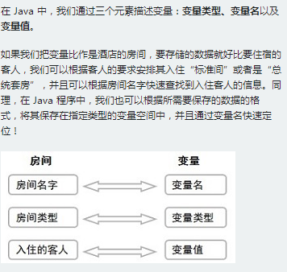

标识符就是用于给 Java 程序中变量、类、方法等命名的符号。
使用标识符时，需要遵守几条规则：
1. 标识符可以由字母、数字、下划线（_）、美元符（$）组成，但不能包含 @、%、空格等其它特殊字符，不能以数字开头。譬如：123name 就是不合法滴
2. 标识符不能是 Java 关键字和保留字（ Java 预留的关键字，以后的升级版本中有可能作为关键字），但可以包含关键字和保留字。如：不可以使用 void 作为标识符，但是 Myvoid 可以
3. 标识符是严格区分大小写的。 所以涅，一定要分清楚 imooc 和 IMooc 是两个不同的标识符哦！
4. 标识符的命名最好能反映出其作用，做到见名知意。
